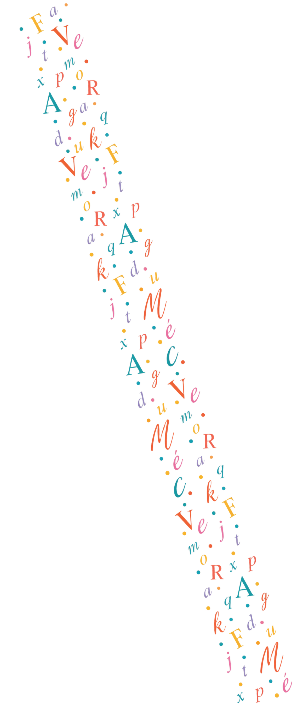
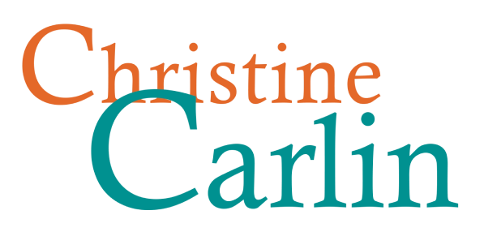

Site en création
Bientôt à vos côtés pour transcrire votre histoire.

"Chaque biographie est une histoire universelle."
Bernard Groethuysen
ECOUTER RECUEILLIR TRANSMETTRE

Bientôt à vos côtés pour transcrire votre histoire.